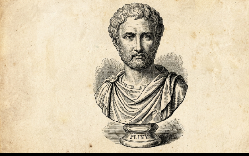
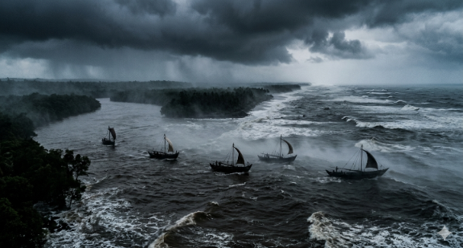
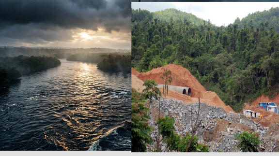

MANGALURU: Long before modern political boundaries carved up the land, and millennia before contemporary engineering machinery attempted to reduce coastal lifelines into downstream pipeline metrics, the Netravathi River stood as a roaring, unyielding symbol of global maritime power. To the ancient Western world, this mighty river was known by a singular, formidable title: The Nitra.
A deep examination of classical Greco-Roman texts reveals a truth that modern planners have systematically ignored. The Netravathi did not merely supply local ecosystems; it defined the geopolitical landscape of the ancient world. Greek and Roman geographers, seeking to map the immense wealth of the Indian subcontinent’s western coast, designated the entire surrounding theater of influence after this single river, identifying the region as the domain of the Nitra.
The Classical Record: Pliny and Ptolemy’s Warnings

In the text of classical accounts, such as the writings of Pliny the Elder and the geographical frameworks of Ptolemy, Roman and Greek navigators explicitly warned their merchant fleets about the mouth of the Nitra. They recorded that formidable fleets of independent local seafarers—characterized by classical empires as fierce "pirates"—operated directly out of the river's massive, deep-water estuary.

These ancient Tuluva seafarers were not lawless marauders in the modern sense; they were the frontline guardians of regional sovereignty. Operating from the heavily fortified, dense mangrove networks of the Netravathi estuary, they fiercely controlled the coastal trade routes. They demanded tribute and exacted a heavy toll from any foreign vessels attempting to exploit the local wealth of pepper, cardamom, and timber without authorization.
The River That Jealoused the Western World
Historical analysts note that the sheer structural and economic power of the Netravathi gateway left ancient Greek empires deeply envious. The Roman empire's treasury was being steadily drained of gold coins to purchase luxury goods flowing out of Tulu Nadu's ports. The Greco-Roman world was consistently frustrated by their inability to project direct military or naval dominance over the mouth of the Nitra, forced instead to rely entirely on the terms dictated by the regional guardians of the river basin.
"The classical records show that the West looked at the Nitra with an intense mixture of awe, jealousy, and strategic caution," says a researcher collaborating with the Tuluva Guardian. "Foreign empires knew that the wealth of the hinterlands was entirely unlocked by this single river corridor. The independent maritime spirit of the ancient Tuluvas ensured that the Netravathi remained entirely under local sovereignty."
From Sovereign Empire to Pipeline Metrics: The Modern Insult
Juxtaposing this glorious maritime past against modern administrative agendas exposes a profound historical insult. The very river system that humbled the navies of classical global empires is today being treated as a passive, expendable asset by inland bureaucratic machinery. The rush to divert upper catchment streams to cover up engineering design failures directly threatens the historical, cultural, and ecological continuity of the Netravathi basin.

By studying how ancient generations fiercely protected the mouth of the Nitra, modern communities can draw vital strategic lessons. The defense of our waters is not a recent environmental trend—it is an ancient, inherited duty passed down by the original seafaring guardians who refused to cede control of our home river to outside forces.
🛡️ The Guardian's Commentary: Channeling Ancient Sovereign Will
If the ancient Greeks and Romans could not bend the Netravathi to their imperial will, modern administrative bodies should not assume they can quietly drain it behind closed doors. The Tuluva Guardian, in alignment with grassroots movements across the coast, calls upon every citizen to channel the unyielding spirit of our ancestors.
We must use the full statutory force of the law—submitting physical, legally binding objections to the National Green Tribunal (NGT) and the MoEFCC—to ensure that the historic Nitra remains wild, free, and completely sovereign.
Stay tuned to Tuluva Guardian as we continue to unearth the rich historical documentation of our coastal river basins and provide technical layout updates on the ongoing defensive campaigns.